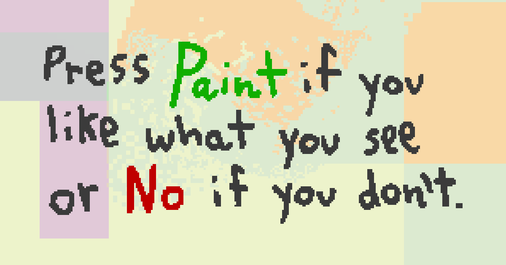
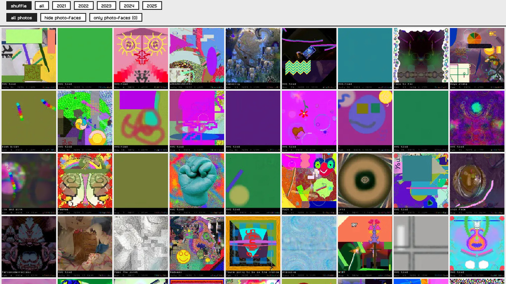

No Paint, 2016–present
Jeffrey Alan Scudder · a painting program that proposes, and a person who says No or Paint

The work
No Paint is a painting program with two buttons. The program picks a brush or a filter from a weighted deck, animates a live proposal over the painting, and waits. No throws the proposal away. Paint freezes time and keeps it. Every painting is a negotiated history of accepted accidents: the person never draws a mark, and the machine never decides what stays.
It began in 2016 as a small iOS experiment, became a free website and app in 2020, and reached the front page of Hacker News that June. Between 2020 and 2021 the deck grew to 39 brushes, with stamps and brushes contributed by players under painter handles, and playlists that performed the deck in sequence. The Summer 2021 release is what runs at nopaint.art today, unchanged, on phones and desktops, with saving restored in 2026 so new paintings still enter the archive.
In 2026 the original project file was recovered from Dropbox, hash-verified and inventoried, and the proposal loop was rebuilt natively inside Aesthetic Computer, the open-source creative computing environment the same author has built in public since 2021. That continuation lives at notepaint.art. The artwork is the whole span: the person, the proposing machine, the community of brush makers, the archive, and the domain that holds them.
- Medium
- Software artwork, networked. Runs in any browser.
- 2016–2021 build
- Construct 3 engine (JavaScript, WebGL), 82 layouts, 1,197 images, 128 sounds, 35 weighted proposals. Source recovered 2026-07-17, SHA-256 1550856d…a2e2.
- 2021–present
- Aesthetic Computer runtime (open source, JavaScript), native proposal loop with explicit No, Paint, pause and save states.
- Paintings
- 256 × 288 px PNG, a 256 × 256 canvas with a baked caption bar: title, date, time and id. 32,184 kept between June 2021 and July 2025, 3.9 GB, served from pix.nopaint.art.
- Archive
- nopaint.art/gallery: searchable by colour, subject and painted words, filterable by year and by photo content.
- Source
- github.com/whistlegraph/aesthetic-computer
The archive
Every painting someone kept by pressing Paint, 2021 to 2025. The count by year tells the story of a toy that outlived its moment and kept being played.
| Year | Paintings kept |
|---|---|
| 2021 | 15,407 |
| 2022 | 8,016 |
| 2023 | 5,449 |
| 2024 | 2,112 |
| 2025 | 1,200 |
| Total | 32,184 |

Twelve from the archive, one or more from each year. Tap any of them for its record.
 2 Aug 2021
2 Aug 2021
 25 Aug 2021
25 Aug 2021
 30 Jul 2021
30 Jul 2021
 16 Sep 2022
16 Sep 2022
 8 Feb 2022
8 Feb 2022
 10 May 2023
10 May 2023
 17 Oct 2023
17 Oct 2023
 11 Mar 2024
11 Mar 2024
 14 May 2024
14 May 2024
 15 Dec 2024
15 Dec 2024
 11 Jun 2025
11 Jun 2025
 16 Mar 2025
16 Mar 2025
People still come. In the five weeks to 26 October 2026 the site had about 900 visits, 419 of them lasting longer than ten seconds, and 27 new paintings were kept.
The story
No Paint is a game of consent between a painter and a proposing machine. I wrote it because I wanted to paint without the blank page and without the mouse: the program would make the first move, and I would only have to answer. The deck is weighted the way a studio is weighted, with common stamps, a soft brush that comes up often, and a rare wanderer that almost never appears. Softy, Bubbles, Grid Worm, Walker, Box, Banner, Wafer: each proposal plays out as an animation over the painting, and the two buttons are the whole interface.
When the free version went out in 2020, players began sending pixel stamps and asking to make brushes. I added their images to the build under painter handles and gave them a template to draw brushes in, then merged each one by hand. That slow loop, strangers learning how software is made by contributing to a toy they liked, is what pushed me to build Aesthetic Computer, where every tool, brush and painting is addressable by URL and nothing waits on me to be merged.
In 2026 I went back for the original. The project file was recovered, verified and inventoried, the 32,184 paintings were synced, described and indexed into a searchable gallery, saving was restored so the 2021 build could keep collecting, and the proposal loop was rebuilt natively so the work can keep changing without losing its past. A piece of software is finished when it stops being maintained. This one is not finished.
The artist
Jeffrey Alan Scudder (b. 1989, USA) is an artist, composer and programmer in Los Angeles who builds and performs his own painting and music software. Since 2011 his instrument-like programs have been shown as live "radical digital painting" performances and as public websites anyone can play. He holds a BFA from Ringling College of Art and Design and an MFA from Yale School of Art, and has taught at Parsons, UCLA and Southern Oregon University.
No Paint (2016–present) was his first program to find a public of its own. Since 2021 he has developed Aesthetic Computer in public: a creative computing environment with a programming language for children and artists (KidLisp), a social layer, and AC OS, which boots salvaged laptops straight into instruments. With Alex Freundlich and Camille Klein he developed Whistlegraph, a drawing-and-singing practice; The Longest Whistlegraph Ever (so far), commissioned by Rhizome, premiered at the New Museum in 2022. His work is held by KADIST and SMK, the National Gallery of Denmark. In 2026 he was a resident artist at CultureHub Los Angeles and opened Everything Computer at tiat.place, San Francisco, with the MacNeoPolitan Trio, three singing laptops. He hosts the NELA Computer Club in Chinatown, Los Angeles.